Ring-lite：通过 C3PO 稳定的 LLM 强化学习实现可扩展推理
Ling Team, Inclusion AI*
*完整作者名单见贡献者部分（第 6 节）。
摘要
我们提出 Ring-lite，这是一种基于 MoE 的大语言模型，通过强化学习（RL）优化，实现高效而稳健的推理能力。我们的方法基于公开的 Ling-lite 模型；该模型总参数为 168 亿，激活参数为 27.5 亿。在 AIME、LiveCodeBench、GPQA-Diamond 等具有挑战性的基准上，我们仅激活同类模型所需参数的三分之一，就达到了最先进的小规模推理模型的性能。为此，我们引入结合蒸馏与 RL 的联合训练流水线，揭示了此前未被记录的 MoE RL 训练挑战。首先，我们识别出 RL 训练中的优化不稳定问题，并提出约束上下文计算策略优化（Constrained Contextual Computation Policy Optimization，C3PO）。这种新方法通过算法与系统协同设计，提高训练稳定性和计算吞吐量。其次，我们通过实验证明，在为 RL 训练选择蒸馏 checkpoint 时，依据熵损失而非验证指标进行选择，能够在后续 RL 训练中获得更优的性能与效率折中。最后，我们设计两阶段训练范式，协调多领域数据的整合，解决混合数据集训练引起的领域冲突。我们将发布模型、数据集与代码。
日期：2025 年 6 月 17 日
代码：https://github.com/inclusionAI/Ring
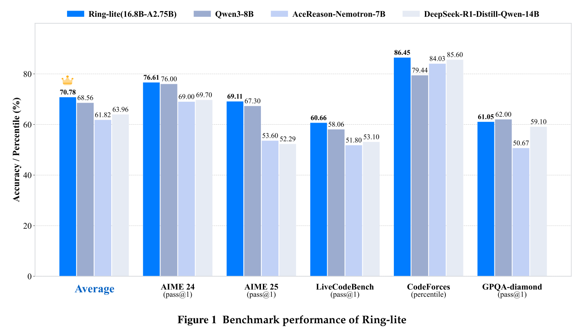
1 引言
OpenAI-O1 系列模型（OpenAI, 2024）与 DeepSeek-R1（DeepSeek-AI, 2025）的显著成功，展现了大规模强化学习（RL）在复杂推理任务中的巨大潜力，吸引了广泛研究关注。然而，这些模型训练所用的详细方法尚未充分公开，形成了阻碍领域进一步发展的重要知识空白。训练技术与策略缺乏透明度，妨碍其他研究人员复现并扩展这些结果。
近期的 DAPO（Yu et al., 2025）、Open-Reasoner-Zero（Hu et al., 2025）和 DeepCoder（Luo et al., 2025a）等进展，通过针对特定任务的 RL 策略取得了有竞争力的推理性能，并公开了模型和数据集。然而，它们的贡献范围仍然较窄，主要聚焦数学或代码生成等孤立领域，跨任务泛化有限。此外，当前研究主要关注稠密模型架构（Yu et al., 2025; Zhang et al., 2025），很少探索 MoE 范式（DeepSeek-AI, 2025; Ling-Team, 2025）在这一背景下的潜力。尤其值得关注的是持续存在的训练稳定性挑战：这是扩展基于 RL 的推理系统的根本前提，却一直未被系统性解决。MoE 架构中专门化专家之间的动态交互，会引入复杂的 gradient 同步与参数更新冲突，往往表现为 loss 振荡，或已获得推理技能的灾难性遗忘。如果没有稳健方法确保大规模 RL 训练稳定，MoE 框架的理论优势就无法在实践中充分实现。
在这项工作中，我们提出 Ring-lite，这是建立在公开 Ling-lite 模型（Ling-Team, 2025）之上的完全开源 MoE 推理模型，旨在增强多领域推理能力。据我们所知，这是首个整合开放训练框架、开放训练数据与开放模型，且专门面向数学、编程和 STEM 领域的工作。此外，Ring-lite 系统研究了 RL 训练中普遍存在的不稳定问题，以及跨领域能力整合产生的冲突。为解决不稳定问题，我们提出约束上下文计算策略优化（C3PO），一种用于强化学习训练的新型 token 级优化框架。我们的模型在复杂推理任务上的实验结果，以及相较于广泛使用的传统组相对策略优化（GRPO）方法更加稳定的奖励曲线，共同证实了这一方法的有效性。Ring-lite 总参数为 16.8B，激活参数为 2.75B，在数学推理、代码生成与 STEM 问题求解基准上取得最先进的性能，达到或超过 10B 以下参数稠密模型的表现。根据 scaling law 分析（Ling-Team, 2025），这些稠密模型是同类架构的标准基线。据我们所知，Ring-lite 是首个处于这一参数效率前沿的公开 MoE 系统：一方面，它通过动态稀疏激活，为高效架构设计提供了方法创新；另一方面，它作为开放获取资源，降低了前沿 AI 研究的门槛。这双重贡献既推进了对神经网络 scaling laws 的理论认识，也推动了高性能语言模型技术的实际普及。具体而言，Ring-lite 在 AIME2024 和 AIME2025 这两个具有挑战性的数学竞赛风格基准上，分别取得 76.61% 与 69.11%；在 LiveCodeBench 和 Codeforces 这两个具有挑战性的代码竞赛生成基准上，分别取得 60.66% 与 86.45%；（续下页）
（接上页）在研究生级科学问答基准 GPQA-diamond 上取得 61.05%。它的平均表现超过 Qwen3-8B（Yang et al., 2025），并接近其他顶级推理模型的性能。
简而言之，我们的工作通过向更广泛社区提供完全开源的解决方案，标志着 AI 研发普及的重要进展。由此，我们显著降低了探索多领域推理的准入门槛，使研究人员与实践者都能为这个蓬勃发展的领域作出贡献并从中受益。主要贡献概括如下。
- 我们首次开源多领域 MoE 推理模型1，涵盖开源基础设施（框架）、训练方法和训练数据集。我们详细介绍完整透明的训练流水线，包括 Long-CoT SFT 与专门面向推理的强化学习（RL）。
- 我们识别了推理模型训练不稳定这一关键挑战，并提出 C3PO 框架。该框架采用固定训练 token 数量（预算）消除回复长度方差，并选择高熵基础模型，以稳定学习动态。它整合了基于算法与工程协同设计范式的强化学习方法，不仅确保长期训练稳定性，还显著提高计算效率。
- 在数学、代码和科学等多个领域中，我们观察到领域间数据冲突，并提出能力整合方法（分阶段训练与均衡数据混合）来解决这一问题。
本文结构如下：第 2 节详细介绍数据集整理过程，包括数据清洗与过滤；第 3 节系统阐述方法框架，强调其贡献与实现细节；最后，第 4 节将模型性能与既有基准进行比较，并综合定量结果和定性观察得出的关键见解。
2 数据
我们的训练数据集包含两部分：（1）用于训练冷启动模型的长 chain-of-thought（Long-CoT）SFT 数据；（2）旨在增强推理能力的强化学习（RL）数据。
2.1 Long-CoT 数据
为了激活基础模型的推理能力，我们整理了一个综合性数据集，包含展现 Long-CoT 推理模式的高质量样本。查询池来自开源仓库，并通过大语言模型（LLM）合成生成进一步丰富。为确保生成高保真 Long-CoT 回复，我们实现了迭代精炼流水线，协同结合自动模型生成、专家人工标注与拒绝采样机制。随后，我们应用严格的数据清洗规范，包括检测并删除重复模式、语言混杂内容和其他噪声来源，得到稳健的高质量数据集。最终数据主要由三个领域构成：数学（64.5%）、代码（25.5%）和科学（9.2%，包含一些由 SHARP（Wu et al., 2025）生成的高质量、高难度样本）。（续下页）
（接上页）数据集的其余部分包含医学和历史等其他类别。总之，我们的 Long-CoT SFT 数据集实现了有效的多领域推理，覆盖数学、编程与科学，为后续强化学习训练提供稳健的初始化。
2.2 RL 训练数据
2.2.1 特定领域推理数据
- 数学。我们首先搜集广泛的数学问题，丰富数学推理数据集的多样性与覆盖范围。这些问题主要来自两个渠道：开源数据集和自行收集的数据。对于开源数据集，我们纳入了专门为强化学习精心整理的数据集，包括 BigMath（Albalak et al., 2025）、DeepScaleR（Luo et al., 2025b）、DAPO（Yu et al., 2025）、DeepMath-103K（He et al., 2025b）等。为进一步扩展数据集，我们抓取在线数学论坛，并收集真实学校考试题。具体而言，我们从 Art of Problem Solving（AoPS）网站的竞赛板块2提取问题；该板块系统归档了不同地区、不同教育阶段的历史数学竞赛记录。此外，我们还搜集了高中、大学等不同教育阶段学校考试与数学竞赛采用的大量人工编写试题。通过这一广泛过程，我们最初收集了数万余道数学问题。随后，应用严格的数据清洗和过滤规范，确保质量与相关性，最终将数据集精炼为超过 73,000 道适合强化学习流程的高质量数学问题。
- 代码。数据集整理自开源编程竞赛资源，主要来自 CodeContest（Li et al., 2022）、TACO（Li et al., 2023）和 APPS（Hendrycks et al., 2021），另包含 QOJ 在线评测平台3的部分问题。为确保数据质量和训练适用性，我们实施多阶段过滤流程。首先，系统删除存在格式不一致的测试用例，例如错误换行或多余空格，同时删除以省略号或不完整模式标记的截断内容。随后，所有“Accepted”（AC）解答均经过代码沙箱环境的严格验证。该验证步骤剔除了外部依赖未解决的提交，并删除因计算效率低下（例如 \(n>10^5\) 时采用 \(O(n^2)\) 算法）或内存溢出风险，无法通过扩展测试用例的实现。我们通过统一空白字符规范，并对齐不同平台的浮点精度阈值，强制进行输出标准化，减少评估标准不一致。为确保完整性，只保留至少附有一个经过全面验证、能通过所有相关测试用例的 AC 解答的问题，从而保留具有现成解法的实际问题。我们应用语义去重，删除与公开代码基准重叠的问题，通过污染控制尽量降低评估偏差风险。最终整理的数据集约包含 14,000 个代码样本，每个样本均配有经过验证的可执行解答，以及严格核验的测试用例，为奖励计算与模型训练奠定稳健基础。
2https://artofproblemsolving.com/community/c13_contest_collections
3https://qoj.ac
- 科学。对于科学领域，我们的 RL 训练数据构建经历三个阶段的演进，以确保质量与难度匹配。最初，我们从 Nemotron-CrossThink（Akter et al., 2025）和 SCP-116K（Lu et al., 2025）等开放数据集取材，建立科学推理的基线。随着模型能力提升，我们使用 SHARP（Wu et al., 2025）合成流水线，生成更难且可验证的问题。然而，由于合成与开源数据存在难度上限和验证局限，我们最终的 RL 训练完全依赖第三阶段数据集。这是专有的高难度人工标注科学问题集合，来自高阶自然科学领域，来源包括奥林匹克竞赛以及研究生（硕士、博士）考试。随后，我们应用严格的整理流程，涵盖质量过滤、答案核验与领域特定标注，最终得到适合强化学习的 3,833 道高质量科学问题。
2.3 数据整理
强化学习过程的效果高度依赖训练数据集质量。通过初步研究，我们发现，即便广泛采用的开源数据集中也仍存在数据污染问题。为确保获得高质量强化学习训练数据集，我们开发了广泛而严格的数据整理流水线。它包含多个阶段，旨在确保数据完全去污染，使其可直接用于 RL 训练。数据处理规范的核心部分主要划分为以下三个关键阶段：
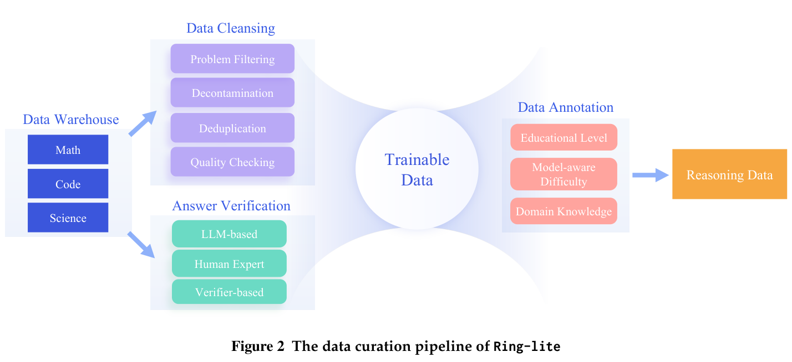
数据清洗。我们首先排除包含无效字符、图像、多个子问题以及缺少有效答案的问题。为确保严格清洗，我们对数据集开展基于字符和基于语义的严格去重与去污染。我们还删除无法唯一求解、或容易猜中答案的问题，例如选择题，以及可以用 True/False、Yes/No 等作答的问题。
答案核验。为确保数据集中问题对应答案的正确性，我们采用多种方法进行全面核验。具体而言，我们使用基于 LLM 的方法评估每个答案的质量。我们利用不同规模的 LLM，为每个问题生成多个独立解答。（续下页）
（接上页）基于 RL 训练所用的验证器，我们计算模型相关通过率。此外，我们邀请人类专家手工标注答案。未通过任一核验方法的问题，会被排除出数据集。
数据标注。为优化数据选择策略，我们细致标注每道推理问题。具体而言，为每道问题标注数据来源、教育阶段、领域特定知识等多维属性。例如，我们使用数学主题分类（MSC）类别评估数学问题的主题。此外，通过计算蒸馏模型的解题率，提供与模型能力相关的难度。所有解答均正确的问题被认为对 RL 训练效率较低，因此予以删除。相反，蒸馏模型与 DeepSeek-R1 都无法解决的问题也被丢弃，确保剩余数据能够有效贡献于强化学习中的策略 gradient 更新。
3 方法
3.1 预备知识
组相对策略优化（Group Relative Policy Optimization，GRPO）算法被 DeepSeek-R1、Qwen3 等广泛使用。对于训练数据集 \(\mathcal D\) 中的每个问题—答案对 \((q,a)\)，我们通过策略模型 \(\pi_{\theta_{\mathrm{old}}}\) 生成 \(K\) 个独立同分布的回复。回复 \(y_i\) 的奖励 \(R_i\) 由奖励模型或基于规则的验证器确定。GRPO 通过组归一化奖励而非价值模型估计优势：\(A_{i,t}=\frac{R_i-\operatorname{mean}(\{R_i\}_{i=1}^K)}{\operatorname{std}(\{R_i\}_{i=1}^K)}\)。具体而言，GRPO 损失为：
其中，\(r_{i,t}(\theta)=\frac{\pi_\theta(y_{i,t}\mid q,y_{i,<t})}{\pi_{\theta_{\mathrm{old}}}(y_{i,t}\mid q,y_{i,<t})}\)，\(\epsilon\) 为裁剪边界。\(D_{\mathrm{KL}}(\pi_\theta\Vert\pi_{\mathrm{ref}})\) 是 token 级 KL 损失，使策略模型 \(\pi_\theta\) 不会偏离参考策略 \(\pi_{\mathrm{ref}}\) 过远。
3.2 C3PO：约束上下文计算策略优化
观察。虽然 long-CoT 推理对于处理复杂任务仍然至关重要，当前 GRPO 方法却表现出系统性的长度相关问题，从根本上损害训练稳定性，对于 long-CoT 推理模型尤其如此。具体而言，我们的分析揭示了影响训练稳定性的两个关键问题：
- 步内长度偏差：在单个 batch 内，长度不一、未经 packing 的回复会在 GRPO 目标下产生显著 gradient 偏差，这一点最早由开创性研究（Yu et al., 2025; Liu et al., 2025）指出。该偏差主要来自长度归一化的 gradient 估计：将每条回复的奖励除以其 token 数进行归一化（称为逐 token 缩放），这一过程会系统性放大短序列的 gradient 幅度，同时削弱长序列的 gradient。尽管近期研究（Yu et al., 2025; Liu et al., 2025）引入 token 级损失机制解决步内长度偏差，跨步 gradient 方差却持续构成挑战，下文将详细说明。
- 跨步 gradient 方差：在具有探索机制的 RL 训练中，策略模型生成回复的序列长度表现出显著随机方差。动态序列长度变化会给 token 级优化器带来不可忽视的优化挑战，因为波动的长度造成训练 token 数量不一致，并沿学习流水线传播。图 7 的实证结果表明，大幅长度波动（图 7a）导致异常的 gradient 特征（图 7b），最终引起奖励过早崩溃（图 7c）。
除了训练不稳定相关挑战外，我们还通过实证观察发现，回复长度变化显著影响训练效率。具体而言，更长的回复序列会增加推理与训练延迟，而更短的序列则降低计算吞吐效率，如图 7d 所示。
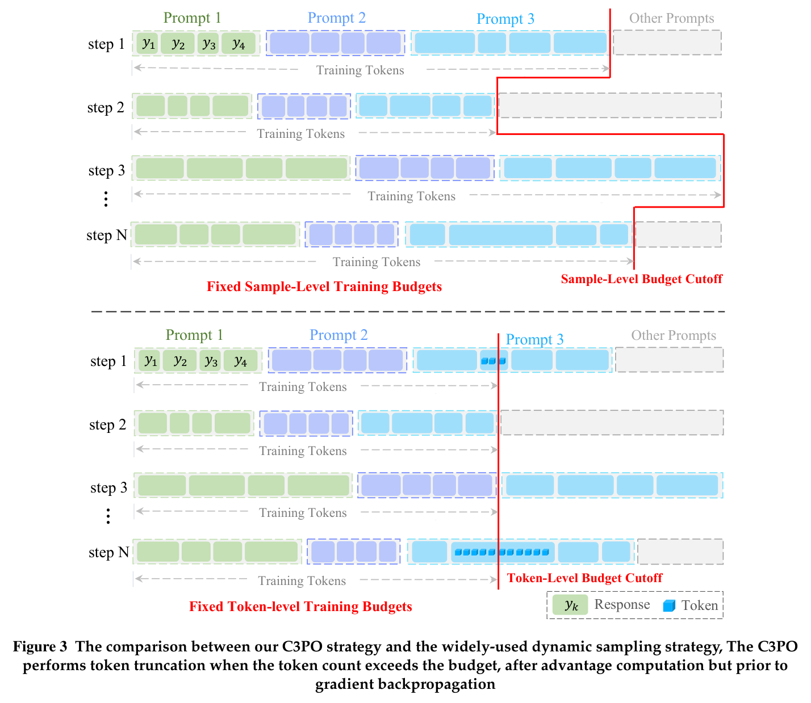
方法。基于这些实证观察，我们认为，算法与工程协同设计是实现稳定且可扩展的强化学习训练的基本要求。为将这一原则付诸实践，我们引入约束上下文计算策略优化（C3PO），这是一种创新的 token 级优化框架，旨在缓解训练不稳定，同时提高吞吐量的一致性。（续下页）
（接上页）核心创新在于建立形式化的计算预算系统，对 token 级 gradient 贡献施加显式约束，从而确保不同长度序列的 gradient 贡献一致。在训练 token 预算约束下，公式 1 中的 GRPO 损失函数改写如下：
其中，\(\Phi\) 是训练 token 预算（即约束上下文计算），\(\Psi\) 是通过自定义采样策略选取的 token。\(\mathcal S\) 是选取用于训练的回复，\(L\) 是每步查询数量，\(K\) 表示组大小，\(|y_i|\) 表示第 \(i\) 个回复的 token 数。在我们的实验中，集合 \(\Psi\) 按如下方式采样：
其中，\(\mathcal B=\{(q,a);\{y_i\}_{i=1}^{K}\}_{l=1}^{L}\) 是一个训练步骤中的完整集合。实际训练时，我们在训练阶段实施带 token 预算的动态采样。对于每个 batch，采用贪心算法迭代选择足够多的回复 \(\mathcal S\)，使累计 token 数恰好略大于或等于预定义预算 \(\Phi\)。
通过在每个优化步骤采用固定 token 预算，C3PO 系统性缓解了 GRPO 对单个序列长度变化的敏感性。这一设计带来两项关键改进：（1）一致的 gradient 缩放：统一因子 \(1/\Phi\) 确保不同 token 长度回复的 gradient 贡献等效，解决传统方法中短、长序列之间的权重失衡偏差。此外，这种设计缓解了回复长度波动引起的异常 gradient 幅度，有效避免训练动态失稳及随后的奖励崩溃；（2）确定性的训练动态：可预测的计算负载消除突发负载引起的延迟尖峰，同时确保分布式训练环境中每步用时一致。
作为 C3PO 框架的补充，我们在损失函数中使用熵正则化（He et al., 2025a），显式惩罚低方差动作分布，从而鼓励策略模型探索。
图 3 比较了 C3PO 策略与广泛使用的动态采样策略（Yu et al., 2025）。每行代表策略模型为单个训练步骤生成的一批分组回复。每组回复数量相同，每条回复包含数量不一的 token。每个训练步骤中，所有 token 汇聚成 token 级全局 batch，再输入 AdamW（Loshchilov and Hutter, 2019）等优化器。由于 token 总长度可变，gradient 呈现高方差，优化器面临挑战，导致收敛困难。以往动态采样等方法（Yu et al., 2025; Team et al., 2025）在样本级执行过滤和删除，却无法（续下页）
（接上页）充分解决这类问题。而 C3PO 在 token 级进行操作，通过采样 token 构建 token 级全局 batch，使每步输入优化器的 token 数保持一致。这降低了 gradient 方差，因而实现显著更加稳定的优化。
Ring-lite 采用 MoE 架构，由于包含多个专门化专家，它与传统稠密模型存在根本差异。然而，这种设计引入了训练中专家不均衡的挑战。为提高训练效率，并避免 token 在专家之间分配不均，我们加入 Ling-Team（2025）详细介绍的负载均衡损失与 router z-loss，公式如下：
其中，\(N_e\) 是专家数量，\(M\) 是 token 数量，\(P_i\) 和 \(F_i\) 是一个 batch 内所有 token 选择第 \(i\) 个专家的平均概率与次数，\(z_{ij}\) 是 router 的 logits。
综上，总训练损失为：
3.3 奖励模型
3.3.1 数学与科学验证器
我们的训练框架在强化学习中纳入基于规则的可验证奖励；这种方法已被证明能有效增强大语言模型的推理能力（DeepSeek-AI, 2025）。对于数学与科学任务，我们在每条输入查询后附加简短指令，以促进长 chain-of-thought 推理，即：“请逐步推理，并将最终答案放在 \\boxed{} 中。”我们使用外部验证工具 Math-Verify4评估模型回复的正确性。具体而言，与标准答案正确匹配的回复得 1 分，错误解答得 0 分。由于 Math-Verify 具有稳健解析能力，能很好地兼容各类数学记号与表达式，我们的训练框架不加入任何显式的格式相关奖励。
3.3.2 代码验证器
对于代码任务，我们构建代码沙箱进行奖励验证，支持 Python、C++、Java 等多种编程语言的代码执行与在线评测任务。它提供多种执行模式（函数调用、在线评测、单元测试）和交互范式（用于训练的实时 SDK/API，用于数据清洗的离线 batch 处理），达到每秒 8K 的吞吐量和亚秒级延迟。借助代码沙箱，我们对代码任务采用稀疏结果奖励开展 RL 训练。具体而言，奖励根据沙箱执行结果定义为：
值得注意的是，该奖励机制采用稀疏设计，只有代码成功通过所有测试用例才会得到奖励 1；否则奖励保持为 0。（续下页）
（接上页）这一方法与为不完整或部分正确的解答提供部分分数的增量奖励系统形成鲜明对比。采用这一策略，我们确保模型受到激励去全面理解问题，而不是只关注表面的测试用例。这可以避免模型简单复述公开测试用例答案，或对琐碎边界情形过拟合，鼓励更稳健、更全面的问题求解方式。
3.4 训练流水线
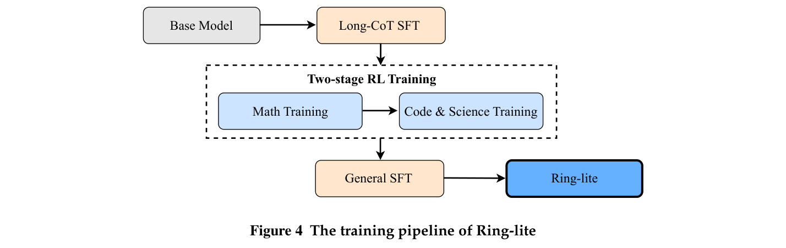
图 4 概述训练流水线。它包含四阶段训练过程。首先，我们开展 Long-CoT SFT，获得蒸馏模型 Ring-lite-distill。这一阶段旨在将更大教师模型的推理能力，直接蒸馏到小型基础模型中。初步分析发现，使用我们精心整理的推理数据，可以进一步增强蒸馏模型的推理能力。然而，直接在混合推理数据上应用 RL，容易受到领域冲突影响，导致性能下降。因此，我们提出两阶段 RL 训练流水线：先在数学数据集上训练，再在后续 RL 训练中加入代码与科学数据集。实证表明，这种方法能够有效保留不同领域的推理能力。由于 Long-CoT SFT 和两阶段 RL 都侧重于提升推理任务表现，我们额外加入通用 SFT 阶段，增强模型在指令遵循、创意写作、安全等各类通用任务上的能力。
4 实验
4.1 实验设置
4.1.1 训练设置
如训练流水线所述，为提升模型推理能力，我们使用构建完善的 Long-CoT 数据集，对 Ling-lite-1.55（Ling-Team, 2025）开展 SFT。优化采用 AdamW，权重衰减为 0.1，学习率为 \(3\times10^{-4}\)，遵循余弦衰减调度，搭配 1% 的线性 warmup。训练配置为 batch size 256，训练 3 个 epoch。为支持长上下文推理，我们将上下文窗口设为 32,768 token，并将 RoPE base 调整为 600,000，以改善稳定性。
采用 C3PO 开展 RL 训练时，batch size \(L\) 为 512，每个提示采样 \(K=16\) 个回复，使用 AdamW 优化器，学习率为 \(3\times10^{-6}\)。token 预算参数设为 409600。最大总长度配置为 24576，并在第二阶段代码与科学训练中扩展至 32768。我们将熵损失系数设为 \(\alpha_{\mathrm{ent}}=5\times10^{-4}\)，负载均衡损失系数设为 \(\alpha_{\mathrm{balance}}=10^{-5}\)，router z-loss 系数设为 \(\alpha_{\mathrm{zloss}}=10^{-7}\)，KL 损失系数设为 \(\beta=10^{-3}\)。所有实验均在 256 块 NVIDIA H800 上进行。
4.1.2 基准
为全面评估推理模型的质量，我们实施自动化基准，按以下维度衡量性能。
- 数学：MATH-500（Lightman et al., 2024）、AIME 2024、AIME 2025（AIME, 2025）、CNMO 20246、Livemathbench（Liu et al., 2024）、MinervaMath（Lewkowycz et al., 2022）。
- 编程：LiveCodeBench（Jain et al., 2025）（202408–202501）、Codeforces7。
- 科学：GPQA Diamond（Rein et al., 2023）、OlympiadBench（He et al., 2024）。
4.1.3 基线
我们与多个相近参数规模的基线进行全面比较，包括 Qwen3-8B-Thinking（Yang et al., 2025）、R1-Distill-Qwen-7B、R1-Distill-Qwen-14B（DeepSeek-AI, 2025）、AceReason-Nemotron-7B（Chen et al., 2025）和 Ring-lite-distill-preview（Tang et al., 2025）。
4.1.4 评估设置
对于全部推理模型，温度设为 1.0、top-p 为 0.95、最大输出长度为 32,768 token。此外，所有提示统一采用零样本设置。数学基准使用 Math-Verify 评估模型生成结果。
4.2 主要结果
评估结果见表 1。为公平比较，我们将 Ring-lite 与近期具有竞争力、参数约 10B 的推理模型比较。如表 1 所示，Ring-lite 仅使用 2.75B 激活参数，就在多种推理任务上获得最佳平均分。这使 Ring-lite 成为小规模 MoE 模型中新的最先进推理模型，其性能可匹敌甚至超过最新的强大 10B 以下稠密推理模型 Qwen3-8b-Thinking。此外，与先前发布的蒸馏 MoE 模型 Ring-lite-distill-preview 相比，Ring-lite 在所有基准上都显著提升推理性能，进一步证明训练流水线的优越性。
4.3 关键发现
本节分析跨不同领域开展强化学习训练时得到的核心观察，特别关注涌现的不稳定现象、SFT 与 RL 方法之间的训练效率，以及领域间数据冲突。为确保公平比较，（续下页）
6https://www.cms.org.cn/Home/comp/comp/cid/12.html
7Codeforces 评估使用 14 场 Codeforces Div. 2 竞赛的问题，结合专家设计的测试用例，随后计算预期 rating 与参赛者百分位。
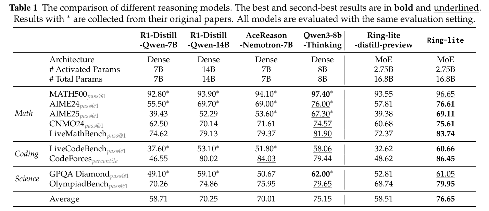
（接上页）我们按第 2.1 节所述，使用 Long-CoT 数据集对 Qwen2.5-7B-Base（Qwen et al., 2025）开展 SFT，得到 Ring-distill-Qwen-7B 模型。
4.3.1 迈向稳定且高效的 RL
如方法部分所述，我们通过实证观察到，GRPO 在 RL 训练中存在显著训练不稳定与吞吐量波动。本节通过系统实验确认这些现象，随后通过定量分析，证明所提方法能有效解决这两项挑战：
1. 蒸馏模型 RL 训练中的奖励崩溃现象
使用蒸馏模型开展强化学习训练时，我们发现，奖励轨迹在若干训练步骤后急剧下降，无法恢复至基线水平，最终导致训练彻底崩溃。通过严格的实证诊断，我们确定了影响 RL 训练稳定性的两个关键因素：模型熵，用于量化蒸馏模型中的策略退化；以及回复长度波动，用于衡量序列生成的不稳定程度。定量消融研究表明，这两个因素与奖励崩溃高度相关，具体如下：
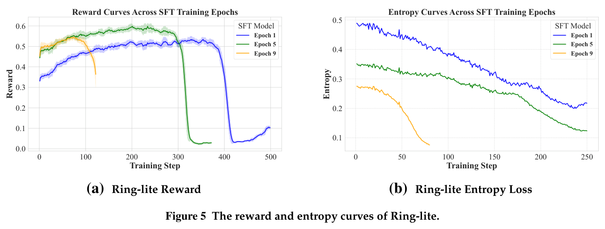
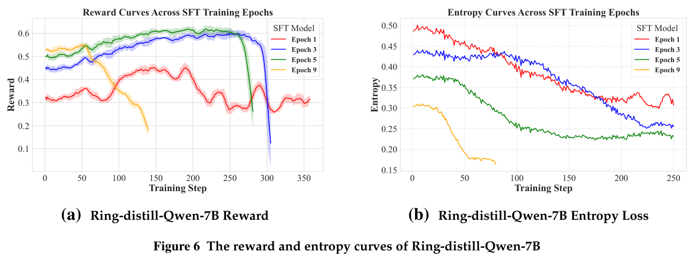
- 模型熵：如图 5 所示，RL 训练中的奖励崩溃系统性地依赖 Long-CoT SFT 的 epoch 数：SFT epoch 越多，模型越早崩溃。具体而言，经历更多 SFT epoch 的模型，奖励崩溃发生得更早。与此同时，熵损失也下降（图 6），揭示出熵损失大小与 RL 训练稳定性之间稳健的反向关联。总体而言，这些结果表明，SFT 期间较低的熵损失，对应后续 RL 阶段更高的奖励崩溃倾向，暗示这些变量之间存在统计上显著的负相关。值得注意的是，这一模式在 MoE 和稠密模型中都存在，表明所观察现象不依赖于架构。
- 回复长度波动：图 7（Ring-lite）和图 8（Ring-distill-Qwen-7B）表明，生成长度在不同训练步骤之间变化很大，使训练 token 数量大幅波动。不稳定的训练 token 数量严重影响优化稳定性，表现为 gradient 范数明显增加、偶尔出现尖峰，最终造成灾难性奖励崩溃。这一观察突出表明，必须设计同时缓解熵损失与生成长度变化的策略，才能确保 RL 稳定训练。
2. RL 训练吞吐量波动
除了奖励崩溃，我们的实证观察还发现，RL 训练过程中会出现显著吞吐量波动，给分布式系统的训练效率优化带来重大挑战。如图 7（Ring-lite）和图 8（Ring-distill-Qwen-7B）所示，这些变化主要由回复长度变化引起。具体而言，较长回复序列需要每个训练步骤进行更长时间计算，而较短序列无法充分利用计算资源，从而降低吞吐效率。这种动态吞吐行为给系统设计带来重要优化挑战，因为不可预测的计算需求，使高效资源分配与调度难以实现。
由于 GRPO 存在训练不稳定和吞吐量波动问题，我们提出 C3PO，通过两项关键机制加以解决：（1）选择熵损失较高的 SFT checkpoint，稳定优化动态；（2）在训练中施加固定 token 预算，确保训练 token 数量一致。为验证（续下页）
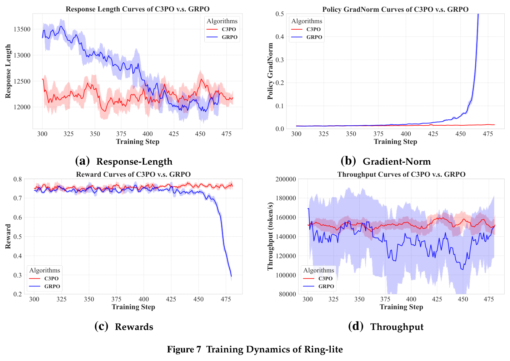
（接上页）方法有效性，我们使用两个架构不同的蒸馏初始化模型开展实验：Ring-lite-distill 与 Ring-distill-Qwen-7B。
如图 7、8 所示，SFT epoch 较少的模型在 RL 训练中稳定性更强。然而，实证分析（表 2）揭示了训练稳定性与最终性能之间的一项关键折中。虽然从 Epoch 1 checkpoint 初始化的模型，在两种配置中都表现出更优稳定性，但其性能指标显著落后于 Epoch 7 和 Epoch 3。反过来，Epoch 9 虽拥有最高初始性能，却在 RL 后期失稳，最终无法超过 Epoch 7 和 Epoch 3。此外，通过保持固定训练 token 数量这一方法创新，C3PO 在生成长度稳定性、gradient 稳定性、奖励稳定性与吞吐量稳定性四项关键指标上，持续优于 GRPO（图 7、8）。总之，C3PO 不仅解决 GRPO 在蒸馏模型上固有的不稳定问题，还确保高效 RL 训练，从而弥合训练稳健性与模型能力之间的差距。
4.3.2 从蒸馏到 RL：平衡 token 效率的艺术
实验采用带 warmup 的恒定学习率调度，学习率为 \([10^{-6},3\times10^{-6}]\)，优化器为 AdamW。具体而言，Ring-MoE 在 \(3\times10^{-6}\) 学习率下更好，而 Qwen 在 \(2\times10^{-6}\) 下取得更优结果。训练 batch size 为 512 个提示，mini-batch size 为 2，每个提示生成 16 个回复。在 rollout 和评估阶段，温度均设为 1.0，以促进回复多样性。对所有方法，我们将（续下页）
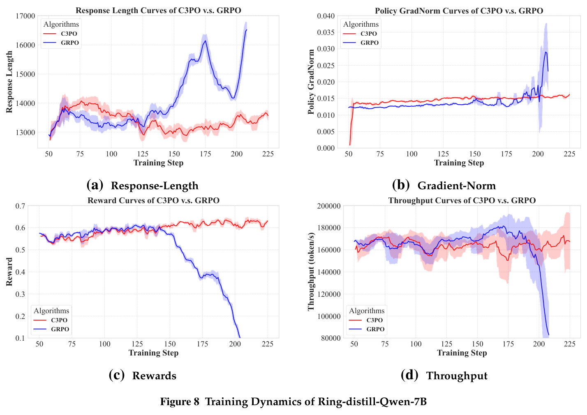
（接上页）边界 \(\epsilon\) 设为 0.2，KL 系数设为 0.001。最大总长度配置为 24576。所有实验均在 256 块 NVIDIA H800 上进行。
为进一步验证发现的普适性，我们在开源社区具有高度影响力的 Qwen 系列模型（Bai et al., 2023）上开展额外实验。遵循 Ring-lite 所用方法，先使用 Long-CoT 数据集微调 Qwen2.5-7B-Instruct，再进行 RL 训练。我们发现，虽然蒸馏有效，但要达到相当性能，其所需训练 token 显著多于强化学习。实证表明，在我们的 RL 设置下，根据 0.3–0.5 范围的熵损失选择 checkpoint，可以取得最佳结果。低于该阈值的熵损失会限制模型探索，降低学会求解更难问题的机会；而过高的熵损失则使收敛更慢，模型性能下降。
图 5b 表明，改变蒸馏模型的训练 epoch 数，会显著影响熵损失趋势，进而决定 RL 的探索范围。实验发现，增加 SFT epoch 数会导致熵快速崩溃；但 SFT 不足又不可避免地造成性能较差。为系统量化最优 SFT epoch 的选择，我们采用 token 效率，即 \(\frac{\text{RL 训练 token 数}}{\text{SFT 训练 token 数}}\)，评估 RL 训练步骤、SFT 训练步骤与平均下游性能的关系。如图 9 与表 2 所示，适中的 SFT epoch 数和合适的 token 效率能够取得最佳性能。在训练流水线中，我们利用这些发现选择最优 SFT 模型。
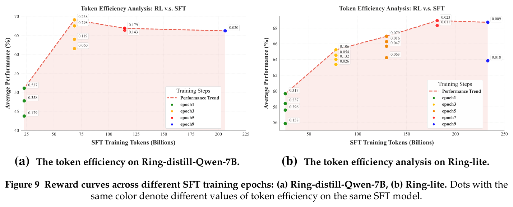
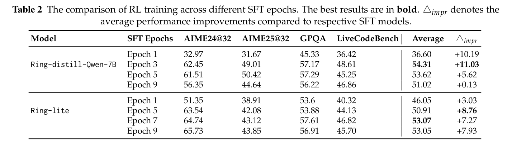
4.3.3 解决领域数据冲突：超越混合方案
实验采用带 warmup 的恒定学习率调度，学习率为 \([2\times10^{-6},3\times10^{-6}]\)，优化器为 AdamW。具体而言，Ring-MoE 在 \(3\times10^{-6}\) 学习率下更好，而 Qwen 在 \(2\times10^{-6}\) 下取得更优结果。训练 batch size 为 512 个提示，每个提示生成 16 个回复。rollout 与评估阶段温度均设为 1.0，以促进回复多样性。所有方法的 KL 系数设为 0.001，最大总长度配置为 24576。所有实验均在 256 块 NVIDIA H800 上进行。
在初步 RL 实验中，我们观察到，用数学与代码推理混合数据集训练冷启动 SFT 模型，会使各项推理基准性能显著下降。随后，我们在两个有代表性的蒸馏稠密模型上开展 RL 实验：DeepSeek-R1-Distill-Qwen-7B 与 Ring-distill-Qwen-7B。
如表 3 所示，将数学与代码领域的推理数据集混合，并不能带来各领域性能增益。相反，混合数据集无法超过只在数学或代码数据集上训练的模型。值得注意的是，我们蒸馏模型的实验发现，无论模型架构配置如何，仅数学训练在代码基准上都优于仅代码训练。然而，这一现象并不适用于 DeepSeek 衍生模型，表明 RL 训练性能可能受到 SFT 阶段 Long-CoT 数据的强烈影响。相反，仅代码 RL 不会为数学任务带来额外改进。
这些结果表明，混合不同推理领域可能产生冲突，阻碍整体性能。针对单个领域的专门训练，似乎更能有效优化各特定领域的性能。
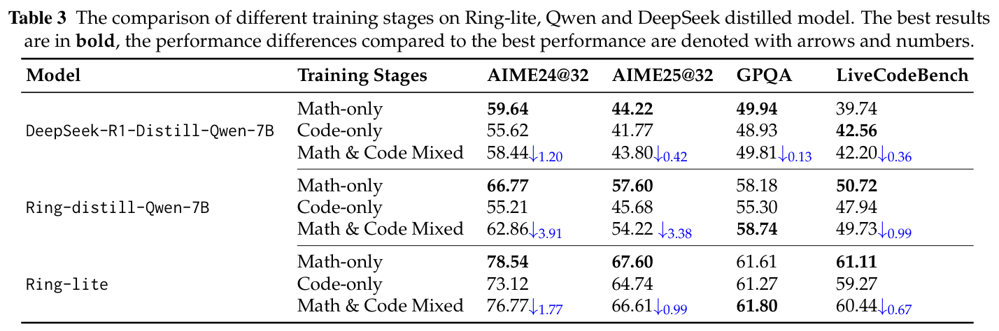
为了在使用多个领域特定数据集训练时提升各领域整体推理表现，我们将 RL 训练划分为多个阶段。具体而言，先只用数学数据集开展 RL 实验，再使用科学与代码数据集开展 RL。如表 4 所示，两阶段训练策略显著改善 AIME25、LiveCodeBench 等困难推理基准的下游性能。此外，将代码与科学训练数据量加倍后，我们在数学与科学基准上均获得平均 1% 的性能提升。基于这些结果，我们为 Ring-lite 采用两阶段策略，维持多个领域上更优的整体推理能力。
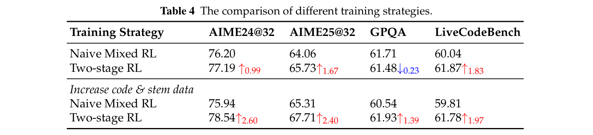
5 结论
本文提出 Ring-lite，一种新型推理 MoE 模型，在多类具有挑战性的任务上取得最先进性能。通过整合所提出的强化学习方法 C3PO，Ring-lite 在保持计算效率与稳定性的同时，显著增强推理能力。实证结果证明其有效性，在 AIME24、AIME25、LiveCodeBench、Codeforces 和 GPQA-diamond 上，分别取得 76.61%、69.11%、60.66%、86.45% 和 61.05%。我们的研究追求两个主要目标：第一，通过算法与工程协同设计改进 RL 训练，提升效率；第二，处理需要高级推理的复杂任务，拓展模型智能边界。
未来，我们计划研究通用奖励建模，以达到人类验证者级别的准确率，并探索系统化数据合成技术，实现可扩展的数据集扩充，从而改善泛化能力。
6 贡献者
作者按名字的字母顺序排列。
Ling Team
Bin Hu
Cai Chen
Deng Zhao
Ding Liu
Dingnan Jin
Feng Zhu
Hao Dai
Hongzhi Luan
Jia Guo
Jiaming Liu
Jiewei Wu
Jun Mei
Jun Zhou
Junbo Zhao
Junwu Xiong
Kaihong Zhang
Kuan Xu
Lei Liang
Liang Jiang
Liangcheng Fu
Longfei Zheng
Qiang Gao
Qing Cui
Quan Wan
Shaomian Zheng
Shuaicheng Li
Tongkai Yang
Wang Ren
Xiaodong Yan
Xiaopei Wan
Xiaoyun Feng
Xin Zhao
Xinxing Yang
Xinyu Kong
Xuemin Yang
Yang Li
Yingting Wu
Yongkang Liu
Zhankai Xu
Zhenduo Zhang
Zhenglei Zhou
Zhenyu Huang
Zhiqiang Zhang
Zihao Wang
Zujie Wen
参考文献
AIME. AIME 试题与解答. https://artofproblemsolving.com/wiki/index.php/AIME_Problems_and_Solutions, 2025.
Syeda Nahida Akter, Shrimai Prabhumoye, Matvei Novikov, Seungju Han, Ying Lin, Evelina Bakhturi, Eric Nyberg, Yejin Choi, Mostofa Patwary, Mohammad Shoeybi, and Bryan Catanzaro. Nemotron-CrossThink：将自我学习扩展至数学推理之外. arXiv preprint arXiv: 2504.13941, 2025.
Alon Albalak, Duy Phung, Nathan Lile, Rafael Rafailov, Kanishk Gandhi, Louis Castricato, Anikait Singh, Chase Blagden, Violet Xiang, Dakota Mahan, and Nick Haber. Big-Math：面向语言模型强化学习的大规模高质量数学数据集, 2025. https://arxiv.org/abs/2502.17387.
Jinze Bai, Shuai Bai, Yunfei Chu, Zeyu Cui, Kai Dang, Xiaodong Deng, Yang Fan, Wenbin Ge, Yu Han, Fei Huang, Binyuan Hui, Luo Ji, Mei Li, Junyang Lin, Runji Lin, Dayiheng Liu, Gao Liu, Chengqiang Lu, Keming Lu, Jianxin Ma, Rui Men, Xingzhang Ren, Xuancheng Ren, Chuanqi Tan, Sinan Tan, Jianhong Tu, Peng Wang, Shijie Wang, Wei Wang, Shengguang Wu, Benfeng Xu, Jin Xu, An Yang, Hao Yang, Jian Yang, Shusheng Yang, Yang Yao, Bowen Yu, Hongyi Yuan, Zheng Yuan, Jianwei Zhang, Xingxuan Zhang, Yichang Zhang, Zhenru Zhang, Chang Zhou, Jingren Zhou, Xiaohuan Zhou, and Tianhang Zhu. Qwen 技术报告, 2023. https://arxiv.org/abs/2309.16609.
Yang Chen, Zhuolin Yang, Zihan Liu, Chankyu Lee, Peng Xu, Mohammad Shoeybi, Bryan Catanzaro, and Wei Ping. AceReason-Nemotron：通过强化学习推进数学与代码推理, 2025. https://arxiv.org/abs/2505.16400.
DeepSeek-AI. DeepSeek-R1：通过强化学习激励 LLM 的推理能力, 2025. https://arxiv.org/abs/2501.12948.
Chaoqun He, Renjie Luo, Yuzhuo Bai, Shengding Hu, Zhen Leng Thai, Junhao Shen, Jinyi Hu, Xu Han, Yujie Huang, Yuxiang Zhang, Jie Liu, Lei Qi, Zhiyuan Liu, and Maosong Sun. OlympiadBench：以奥林匹克级双语多模态科学问题推动 AGI 的高难度基准. In Lun-Wei Ku, Andre Martins, and Vivek Srikumar, editors, Proceedings of the 62nd Annual Meeting of the Association for Computational Linguistics (Volume 1: Long Papers), ACL 2024, Bangkok, Thailand, August 11-16, 2024, pages 3828–3850. Association for Computational Linguistics, 2024. doi: 10.18653/V1/2024.ACL-LONG.211. https://doi.org/10.18653/v1/2024.acl-long.211.
Jujie He, Jiacai Liu, Chris Yuhao Liu, Rui Yan, Chaojie Wang, Peng Cheng, Xiaoyu Zhang, Fuxiang Zhang, Jiacheng Xu, Wei Shen, Siyuan Li, Liang Zeng, Tianwen Wei, Cheng Cheng, Bo An, Yang Liu, and Yahui Zhou. Skywork Open Reasoner 1 技术报告. arXiv preprint arXiv:2505.22312, 2025a.
Zhiwei He, Tian Liang, Jiahao Xu, Qiuzhi Liu, Xingyu Chen, Yue Wang, Linfeng Song, Dian Yu, Zhenwen Liang, Wenxuan Wang, Zhuosheng Zhang, Rui Wang, Zhaopeng Tu, Haitao Mi, and Dong Yu. DeepMath-103K：用于推进推理的大规模、高难度、去污染且可验证的数学数据集, 2025b. https://arxiv.org/abs/2504.11456.
Dan Hendrycks, Steven Basart, Saurav Kadavath, Mantas Mazeika, Akul Arora, Ethan Guo, Collin Burns, Samir Puranik, Horace He, Dawn Song, and Jacob Steinhardt. 使用 APPS 衡量编程挑战能力. NeurIPS, 2021.
Jingcheng Hu, Yinmin Zhang, Qi Han, Daxin Jiang, Xiangyu Zhang, and Heung-Yeung Shum. Open-Reasoner-Zero：在基础模型上扩展强化学习的开源方法, 2025. https://arxiv.org/abs/2503.24290.
Naman Jain, King Han, Alex Gu, Wen-Ding Li, Fanjia Yan, Tianjun Zhang, Sida Wang, Armando Solar-Lezama, Koushik Sen, and Ion Stoica. LiveCodeBench：大语言模型代码能力的全面无污染评估. In The Thirteenth International Conference on Learning Representations, ICLR 2025, Singapore, April 24-28, 2025. OpenReview.net, 2025. https://openreview.net/forum?id=chfJJYC3iL.
Aitor Lewkowycz, Anders Andreassen, David Dohan, Ethan Dyer, Henryk Michalewski, Vinay V. Ramasesh, Ambrose Slone, Cem Anil, Imanol Schlag, Theo Gutman-Solo, Yuhuai Wu, Behnam Neyshabur, Guy Gur-Ari, and Vedant Misra. 使用语言模型求解定量推理问题. In Sanmi Koyejo, S. Mohamed, A. Agarwal, Danielle Belgrave, K. Cho, and A. Oh, editors, Advances in Neural Information Processing Systems 35: Annual Conference on Neural Information Processing Systems 2022, NeurIPS 2022, New Orleans, LA, USA, November 28 - December 9, 2022, 2022. http://papers.nips.cc/paper_files/paper/2022/hash/18abbeef8cfe9203fdf9053c9c4fe191-Abstract-Conference.html.
Rongao Li, Jie Fu, Bo-Wen Zhang, Tao Huang, Zhihong Sun, Chen Lyu, Guang Liu, Zhi Jin, and Ge Li. TACO：算法代码生成主题数据集, 2023. https://arxiv.org/abs/2312.14852.
Yujia Li, David Choi, Junyoung Chung, Nate Kushman, Julian Schrittwieser, Rémi Leblond, Tom Eccles, James Keeling, Felix Gimeno, Agustin Dal Lago, Thomas Hubert, Peter Choy, Cyprien de Masson d’Autume, Igor Babuschkin, Xinyun Chen, Po-Sen Huang, Johannes Welbl, Sven Gowal, Alexey Cherepanov, James Molloy, Daniel J. Mankowitz, Esme Sutherland Robson, Pushmeet Kohli, Nando de Freitas, Koray Kavukcuoglu, and Oriol Vinyals. 使用 AlphaCode 实现竞赛级代码生成, 2022. https://www.science.org/doi/abs/10.1126/science.abq1158.
Hunter Lightman, Vineet Kosaraju, Yuri Burda, Harrison Edwards, Bowen Baker, Teddy Lee, Jan Leike, John Schulman, Ilya Sutskever, and Karl Cobbe. 让我们逐步验证. In The Twelfth International Conference on Learning Repre-sentations, ICLR 2024, Vienna, Austria, May 7-11, 2024. OpenReview.net, 2024. https://openreview.net/forum?id=v8L0pN6EOi.
Ling-Team. 每次 FLOP 都重要：无需高端 GPU 扩展 300B MoE Ling LLM, 2025. https://arxiv.org/abs/2503.05139.
Junnan Liu, Hongwei Liu, Linchen Xiao, Ziyi Wang, Kuikun Liu, Songyang Gao, Wenwei Zhang, Songyang Zhang, and Kai Chen. 你的 LLM 能够稳定推理吗？ CoRR, abs/2412.13147, 2024. doi: 10.48550/ARXIV.2412.13147. https://doi.org/10.48550/arXiv.2412.13147.
Zichen Liu, Changyu Chen, Wenjun Li, Penghui Qi, Tianyu Pang, Chao Du, Wee Sun Lee, and Min Lin. 理解类 R1-Zero 训练：批判性视角. arXiv preprint arXiv:2503.20783, 2025.
Ilya Loshchilov and Frank Hutter. 解耦的权重衰减正则化, 2019. https://arxiv.org/abs/1711.05101.
Dakuan Lu, Xiaoyu Tan, Rui Xu, Tianchu Yao, Chao Qu, Wei Chu, Yinghui Xu, and Yuan Qi. SCP-116K：高等教育科学领域的高质量问题—解答数据集与通用自动提取流水线, 2025. https://arxiv.org/abs/2501.15587.
Michael Luo, Sijun Tan, Roy Huang, Ameen Patel, Alpay Ariyak, Qingyang Wu, Xiaoxiang Shi, Rachel Xin, Colin Cai, Maurice Weber, Ce Zhang, Li Erran Li, Raluca Ada Popa, and Ion Stoica. DeepCoder：达到 o3-mini 水平的完全开源 14B 编程模型, 2025a. https://www.together.ai/blog/deepcoder.
Michael Luo, Sijun Tan, Justin Wong, Xiaoxiang Shi, William Y. Tang, Manan Roongta, Colin Cai, Jeffrey Luo, Li Erran Li, Raluca Ada Popa, and Ion Stoica. DeepScaleR：通过扩展 RL，使 1.5B 模型超过 o1-preview, 2025b. https://pretty-radio-b75.notion.site/DeepScaleR-Surpassing-O1-Preview-with-a-1-5B-Model-by-Scaling-RL-19681902c1468005bed8ca303013a4e2.
OpenAI. OpenAI o1 系统卡, 2024. https://arxiv.org/abs/2412.16720.
Qwen, :, An Yang, Baosong Yang, Beichen Zhang, Binyuan Hui, Bo Zheng, Bowen Yu, Chengyuan Li, Dayiheng Liu, Fei Huang, Haoran Wei, Huan Lin, Jian Yang, Jianhong Tu, Jianwei Zhang, Jianxin Yang, Jiaxi Yang, Jingren Zhou, Junyang Lin, Kai Dang, Keming Lu, Keqin Bao, Kexin Yang, Le Yu, Mei Li, Mingfeng Xue, Pei Zhang, Qin Zhu, Rui Men, Runji Lin, Tianhao Li, Tianyi Tang, Tingyu Xia, Xingzhang Ren, Xuancheng Ren, Yang Fan, Yang Su, Yichang Zhang, Yu Wan, Yuqiong Liu, Zeyu Cui, Zhenru Zhang, and Zihan Qiu. Qwen2.5 技术报告, 2025. https://arxiv.org/abs/2412.15115.
David Rein, Betty Li Hou, Asa Cooper Stickland, Jackson Petty, Richard Yuanzhe Pang, Julien Dirani, Julian Michael, and Samuel R. Bowman. GPQA：研究生级、无法依赖 Google 搜索作答的问答基准, 2023. https://arxiv.org/abs/2311.12022.
Caizhi Tang, Chilin Fu, Chunwei Wu, Jia Guo, Jianwen Wang, Jingyu Hu, Liang Jiang, Meng Li, Peng Jiao, Pingping Liu, Shaomian Zheng, Shiwei Liang, Shuaicheng Li, Yalin Zhang, Yingting Wu, Yongkang Liu, and Zhenyu Huang. 整体能力保留：迈向紧凑而全面的推理模型, 2025. https://github.com/inclusionAI/Ring/blob/main/Ring_Lite_Distill_Preview.pdf.
Tencent Hunyuan Team, Ao Liu, Botong Zhou, Can Xu, Chayse Zhou, ChenChen Zhang, Chengcheng Xu, Chenhao Wang, Decheng Wu, Dengpeng Wu, Dian Jiao, Dong Du, Dong Wang, Feng Zhang, Fengzong Lian, Guanghui Xu, Guanwei Zhang, Hai Wang, Haipeng Luo, Han Hu, Huilin Xu, Jiajia Wu, Jianchen Zhu, Jianfeng Yan, Jiaqi Zhu, Jihong Zhang, Jinbao Xue, Jun Xia, Junqiang Zheng, Kai Liu, Kai Zhang, Kai Zheng, Kejiao Li, Keyao Wang, Lan Jiang, Lixin Liu, Lulu Wu, Mengyuan Huang, Peijie Yu, Peiqi Wang, Qian Wang, Qianbiao Xiang, Qibin Liu, Qingfeng Sun, Richard Guo, Ruobing Xie, Saiyong Yang, Shaohua Chen, Shihui Hu, Shuai Li, Shuaipeng Li, Shuang Chen, Suncong Zheng, Tao Yang, Tian Zhang, Tinghao Yu, Weidong Han, Weijie Liu, Weijin Zhou, Weikang Wang, Wesleye Chen, Xiao Feng, Xiaoqin Ren, Xingwu Sun, Xiong Kuang, Xuemeng Huang, Xun Cao, Yanfeng Chen, Yang Du, Yang Zhen, Yangyu Tao, Yaping Deng, Yi Shen, Yigeng Hong, Yiqi Chen, Yiqing Huang, Yuchi Deng, Yue Mao, Yulong Wang, Yuyuan Zeng, Zenan Xu, Zhanhui Kang, Zhe Zhao, ZhenXiang Yan, Zheng Fang, Zhichao Hu, Zhongzhi Chen, Zhuoyu Li, Zongwei Li, Alex Yan, Ande Liang, Baitong Liu, Beiping Pan, Bin Xing, Binghong Wu, Bingxin Qu, Bolin Ni, Boyu Wu, Chen Li, Cheng Jiang, Cheng Zhang, Chengjun Liu, Chengxu Yang, Chengzhong Xu, Chiyu Wang, Chong Zha,
Daisy Yi, Di Wang, Fanyang Lu, Fei Chen, Feifei Liu, Feng Zheng, Guanghua Yu, Guiyang Li, Guohua Wang, Haisheng Lin, Han Liu, Han Wang, Hao Fei, Hao Lu, Haoqing Jiang, Haoran Sun, Haotian Zhu, Huangjin Dai, Huankui Chen, Huawen Feng, Huihui Cai, Huxin Peng, Jackson Lv, Jiacheng Shi, Jiahao Bu, Jianbo Li, Jianglu Hu, Jiangtao Guan, Jianing Xu, Jianwei Cai, Jiarong Zhang, Jiawei Song, Jie Jiang, Jie Liu, Jieneng Yang, Jihong Zhang, Jin lv, Jing Zhao, Jinjian Li, Jinxing Liu, Jun Zhao, Juntao Guo, Kai Wang, Kan Wu, Lei Fu, Lei He, Lei Wang, Li Liu, Liang Dong, Liya Zhan, Long Cheng, Long Xu, Mao Zheng, Meng Liu, Mengkang Hu, Nanli Chen, Peirui Chen, Peng He, Pengju Pan, Pengzhi Wei, Qi Yang, Qi Yi, Roberts Wang, Rongpeng Chen, Rui Sun, Rui Yang, Ruibin Chen, Ruixu Zhou, Shaofeng Zhang, Sheng Zhang, Shihao Xu, Shuaishuai Chang, Shulin Liu, SiQi Wang, Songjia Feng, Songling Yuan, Tao Zhang, Tianjiao Lang, Tongkai Li, Wei Deng, Wei Li, Weichao Wang, Weigang Zhang, Weixuan Sun, Wen Ouyang, Wenxiang Jiao, Wenzhi Sun, Wenzhuo Jia, Xiang Zhang, Xiangyu He, Xianshun Ren, XiaoYing Zhu, Xiaolong Guo, Xiaoxue Li, Xiaoyu Ma, Xican Lu, Xinhua Feng, Xinting Huang, Xinyu Guan, Xirui Li, Xu Zhang, Xudong Gao, Xun Luo, Xuxiang Qi, Yangkun Chen, Yangyu Tao, Yanling Xiao, Yantao Mai, Yanze Chen, Yao Ding, Yeting Yang, YiFan Song, Yifan Yang, Yijiao Zhu, Yinhe Wu, Yixian Liu, Yong Yang, Yuanjun Cai, Yuanlin Tu, Yue Zhang, Yufei Huang, Yuhang Zhou, Yuhao Jiang, Yuhong Liu, Yuhui Hu, Yujin Lin, Yun Yang, Yunhao Wang, Yusong Zhang, Zekun Wu, Zelong Zhang, Zhan Yu, Zhaoliang Yang, Zhe Zhao, Zheng Li, Zhenyu Huang, Zhiguang Liu, Zhijiang Xu, Zhiqing Kui, Zhiyin Zeng, Zhiyuan Xiong, Zhuo Han, Zifan Wu, Zigang Geng, Zilong Zhao, Ziyan Tang, Ziyuan Zhu, Zonglei Zhu, and Zhijiang Xu. Hunyuan-TurboS：通过 Mamba-transformer 协同与自适应 chain-of-thought 推进大语言模型, 2025. https://arxiv.org/abs/2505.15431.
Xiong Jun Wu, Zhenduo Zhang, ZuJie Wen, Zhiqiang Zhang, Wang Ren, Lei Shi, Cai Chen, Deng Zhao, Qing Wang, Xudong Han, Chengfu Tang, Dingnan Jin, Qing Cui, and Jun Zhou. SHARP：为大型推理模型强化学习合成高质量对齐推理问题, 2025. https://arxiv.org/abs/2505.14147.
An Yang, Anfeng Li, Baosong Yang, Beichen Zhang, Binyuan Hui, Bo Zheng, Bowen Yu, Chang Gao, Chengen Huang, Chenxu Lv, Chujie Zheng, Dayiheng Liu, Fan Zhou, Fei Huang, Feng Hu, Hao Ge, Haoran Wei, Huan Lin, Jialong Tang, Jian Yang, Jianhong Tu, Jianwei Zhang, Jianxin Yang, Jiaxi Yang, Jing Zhou, Jingren Zhou, Junyang Lin, Kai Dang, Keqin Bao, Kexin Yang, Le Yu, Lianghao Deng, Mei Li, Mingfeng Xue, Mingze Li, Pei Zhang, Peng Wang, Qin Zhu, Rui Men, Ruize Gao, Shixuan Liu, Shuang Luo, Tianhao Li, Tianyi Tang, Wenbiao Yin, Xingzhang Ren, Xinyu Wang, Xinyu Zhang, Xuancheng Ren, Yang Fan, Yang Su, Yichang Zhang, Yinger Zhang, Yu Wan, Yuqiong Liu, Zekun Wang, Zeyu Cui, Zhenru Zhang, Zhipeng Zhou, and Zihan Qiu. Qwen3 技术报告, 2025. https://arxiv.org/abs/2505.09388.
Qiying Yu, Zheng Zhang, Ruofei Zhu, Yufeng Yuan, Xiaochen Zuo, Yu Yue, Weinan Dai, Tiantian Fan, Gaohong Liu, Lingjun Liu, Xin Liu, Haibin Lin, Zhiqi Lin, Bole Ma, Guangming Sheng, Yuxuan Tong, Chi Zhang, Mofan Zhang, Wang Zhang, Hang Zhu, Jinhua Zhu, Jiaze Chen, Jiangjie Chen, Chengyi Wang, Hongli Yu, Yuxuan Song, Xiangpeng Wei, Hao Zhou, Jingjing Liu, Wei-Ying Ma, Ya-Qin Zhang, Lin Yan, Mu Qiao, Yonghui Wu, and Mingxuan Wang. DAPO：大规模开源 LLM 强化学习系统, 2025. https://arxiv.org/abs/2503.14476.
Xiaojiang Zhang, Jinghui Wang, Zifei Cheng, Wenhao Zhuang, Zheng Lin, Minglei Zhang, Shaojie Wang, Yinghan Cui, Chao Wang, Junyi Peng, Shimiao Jiang, Shiqi Kuang, Shouyu Yin, Chaohang Wen, Haotian Zhang, Bin Chen, and Bing Yu. SRPO：LLM 大规模强化学习的跨领域实现, 2025. https://arxiv.org/abs/2504.14286.